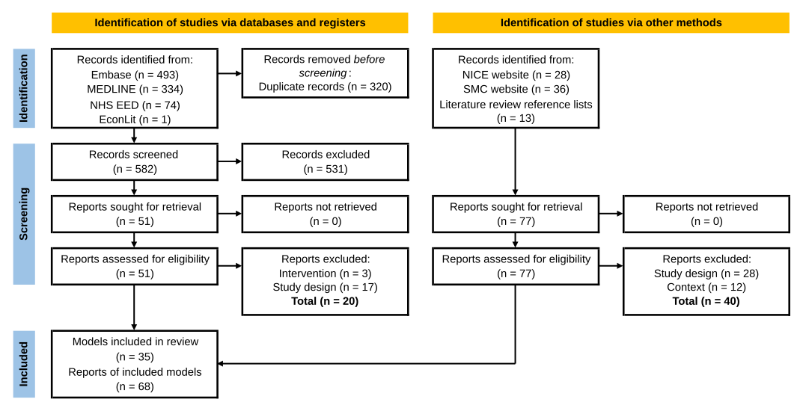
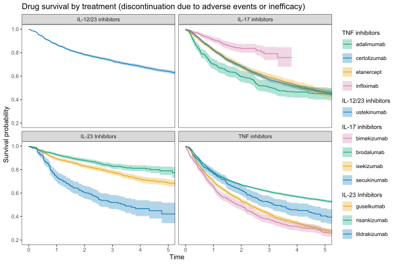
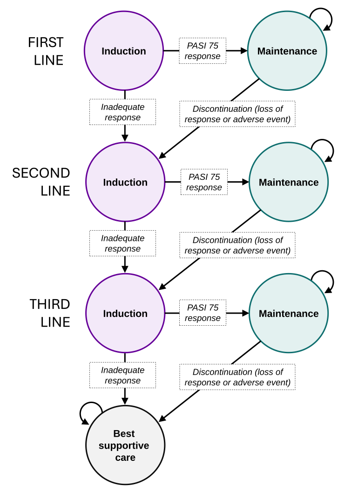

Psoriasis is a chronic skin disease caused by systemic, immune-mediated inflammation. There is no cure for psoriasis, but it can be managed with treatment. In recent years, expensive biologics and targeted small-molecule therapies have significantly improved psoriasis care, but this has come with additional costs, though some low-cost biosimilars are now available. The objective of this PhD is to evaluate different ways of using systemic therapies in psoriasis, taking both costs and patient outcomes into account.
We searched MEDLINE, Embase, EconLit, NHS Economic Evaluation Database, and the websites of NICE and SMC for UK cost-utility analyses in psoriasis and psoriatic arthritis. We conducted a narrative synthesis of approaches to modelling, treatment sequences, comorbidities, clinical efficacy, quality of life, and costs. Quality was assessed using the Drummond checklist.

The scope of previous analyses is limited to people who have already received conventional systemic therapies, following standard 'step-through' therapy guidelines, so the cost-effectiveness of using biologics or targeted small-molecule therapies first is unclear.
Cost-effectiveness models compare only a limited set of sequences, limiting them to three drugs and often fixing second- and third-line treatments while varying the first-line treatment. NICE and BAD guidance doesn't specify which targeted therapies should be given before others.
Health economic analyses in this area follow established methods, but these methods embed assumptions that may not hold in practice, particularly around long-term outcomes. This limits the meaningfulness of results for the NHS.
The British Association of Dermatologists Biologics and Immunomodulators Register (BADBIR) was founded in 2007 and contains data from over 20,000 individuals, including drug start/stop dates, disease severity, and adverse events.
Previous health economic analyses rely heavily on short-term trial data and make strong assumptions about long term outcomes, for example:

Cost-effectiveness analyses estimate the costs and benefits of different treatment approaches over a person's lifetime. These estimates are used to make a recommendation, taking into account what the money could have been spent on instead (opportunity cost).
The cost-effectiveness model will incorporate results from the network meta-analysis and the BADBIR analysis. The approach described below is for illustrative purposes and has not been finalised.

Potential costs:
Potential health effects:
The perspectives of people with lived experience of psoriasis are vital to conducting and sharing meaningful research in health economics and epidemiology.
To help guide this project, I recruited an advisory group of five people with psoriasis through the Psoriasis UK research network.
The first advisory group meeting was held in May 2026 and discussed issues including NHS policies around systemic therapy for psoriasis, the value of stable therapy, and what 'successful therapy' looks like.
Future meetings could be used to support model design, interpret results, and support research dissemination.